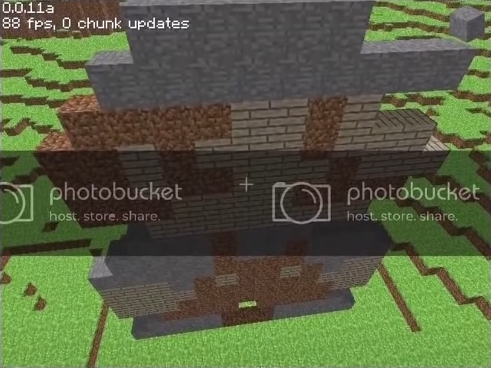

Следующий период в истории называется -
CLASSIC
Его разделяют на 4 этапа:
- Early classic creative
- Multiplayer test
- Survival test
- Late classic creative
Early classic creative
Как понятно из названия, на этом этапе был лишь творческий режим. Первая версия вышла всё того же 16 мая в 16:52.
Наконец-то названия версий преобрели человеческий вид, она называлась 0.0.1a. Единственым изменением стал номер версии, который отображался в углу экрана.
За вечер того же дня Нотч выпускает ещё 4 обновления:
- 0.0.2a
- 0.0.3a
- 0.0.4a
- 0.0.9a
В основном в них были добавлены фиксы багов.
На следующий день было выпущено 2 мелких обновления, которые кроме фиксов ошибок ничего не принесли. Это были - 0.0.10a и 0.0.11a
В этот день игру разместили на форуме TigSource, что принесло ей некоторый хайп. Пользователи оценили её потенциал, начав делиться своими постройками и пиксель артами.
Так же в этот день был создан первый логотип игры, который представлял собой надпись "Minecraft" из булыжника.

19 мая Нотч делится скриншотом, на котором изображено озеро лавы.
А уже на следующий день выходит версия 0.0.12a. В этой версии были добавлены все жидкости Майнкрафта - лава и вода. Впервые появился бедрок, который тогда упоминался как - неразрушаемый камень. Как и сейчас он был расположен в нижней части карты, а сама карта стала значительно больше. Теперь она пердставляла собой остров окружённый бесконечным океаном.
Физика воды была весьма странной - она заполняла любое пространство рядом с собой. Так же в этой версии появилась пауза, а нажатие N сохраняло мир.